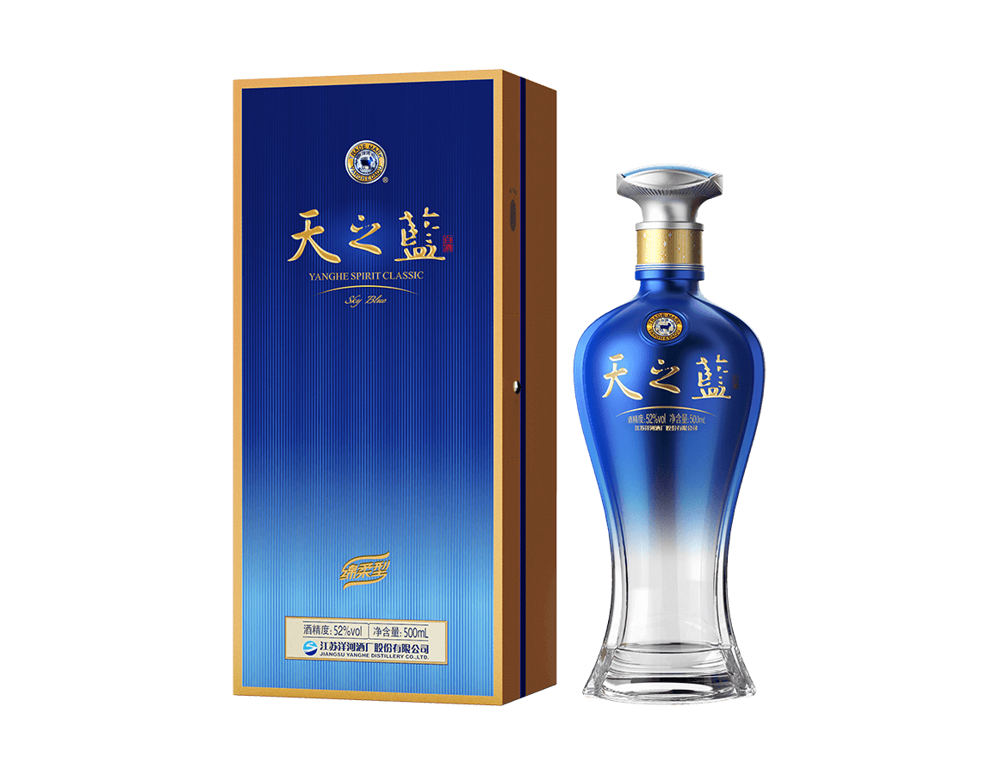

返回首页
中文
English
日本語
中文
English
日本語

天之蓝
天之蓝呈现顺滑饱满的口感，融合浓郁的花香和谷物香气，细腻的甜味，持久清新的回味。
工艺
经典酿造工艺：洋河天之蓝采用源自洋河的经典酿造技艺，融合了古老的酿酒智慧与现代技术，确保酒体风味的完美呈现。
精致陈酿：酒体在特殊的酒窖中经历多年细致陈酿，酒香与酒味得以充分融合，达到绝佳的平衡感与圆润感。
优选原料：精选优质高粱、稻米和天然泉水，精心挑选每一颗原料，确保酒的纯净、顺滑与细腻。
口感
醇厚丰满：天之蓝的酒体浓郁且饱满，层次丰富，融合了花香、果香与谷物香气，带来复杂而和谐的风味体验。
入口丝滑：酒液顺滑细腻，带有微妙的甜美感和清新的口感，令人愉悦，回味悠长。
层次丰富：随着饮用，酒体层次逐渐展现，香气和口感逐步发展，带来每一口的惊喜与满足感。
外观
高端瓶身设计：瓶身设计简洁大气，完美融合传统与现代元素，线条流畅，展现产品的高端气质。
精致包装：包装精美，注重细节的设计，展现出洋河天之蓝的奢华感，适合作为高端礼品赠送。
现代与传统结合：包装设计中巧妙地融入了现代美学与传统文化的元素，突出品牌的历史底蕴与创新。
其他
收藏价值：天之蓝不仅是一款白酒，更是一件艺术品，独特的瓶身与包装设计使其具备较高的收藏价值。
高端定位：作为奢华的高端白酒，天之蓝不仅代表着口感上的优越，更是社会地位与品位的象征。
品牌文化传承：天之蓝承载着洋河几百年历史的酿造传统，融合创新与精致，展现了洋河酒业的深厚文化底蕴。
适合场景
私人庆典
高端品味人士
高端礼品